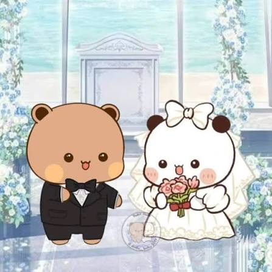

A Magical Moment Just For Us
Close your eyes for a second, think about us, and write the sweetest little wish from your heart. This moment should feel like a celebration of our love. 💌
Pop all the balloons first, then open the gift to see the magic ✨

Through every smile, distance, and milestone ahead...
Flip through the real chapters of our journey (2016 – Present)